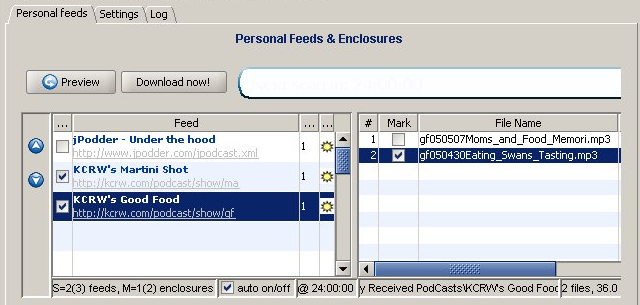

A feed (non-technical term News Channel) represents a RSS (Really Simple Syndication) document. A feed contains a set of items (non-technical term: story) that, in case of podcasts, contains an enclosure representing a media file rather than for example a text. By adding (subscribing) a feed to your personal list of feeds jPodder is able to inspect (preview) a feed to list all available enclosures (media files). These enclosures then can be downloaded manually, in bulk or automatic in defined intervals or fixed time schedules. This way jPodder can download your favorite podcasts over night and present you the next morning a fully charged media player.
The personal feeds panel displays these elements

The table on the left shows all your personal feeds. After selecting a feed in the table, the table on the right will show the available "enclosures & files" for this feed.